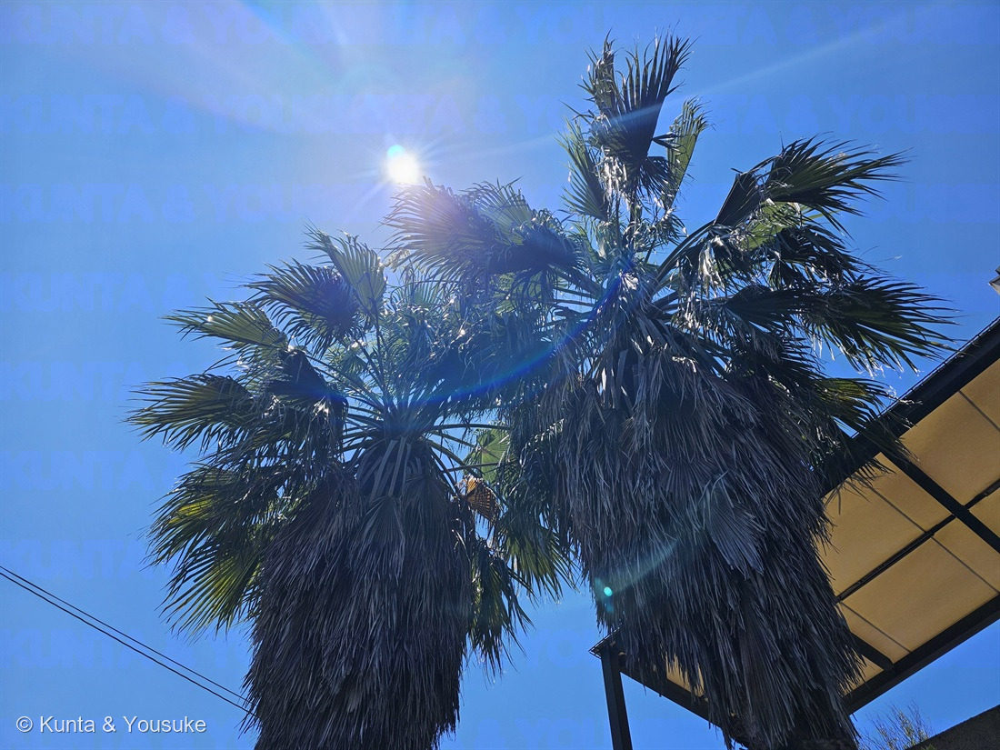
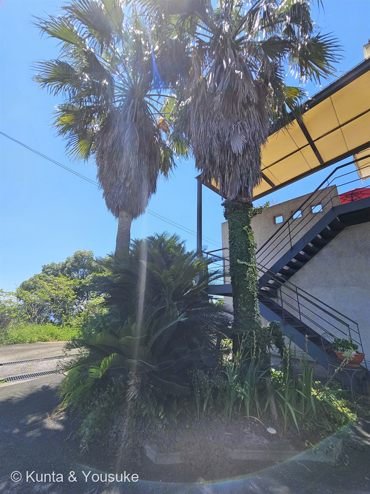

地図を読み込んでいるよ…
🔍 写真も地図も、押しているあいだ拡大して見られるよ（スマホは指を置いてすこし待ってね）。
🌍 の地図＝この子がもともと自生している場所を緑に。アメリカ合衆国南西部からメキシコ北西部。世界各地の温暖域で栽培され、雑種も多い。日本では街路樹や南国風の植栽として植えられているもので、野生化しているわけではない。
⭐アメリカ大陸の子だよ——アメリカ合衆国南西部からメキシコ北西部原産（Wikipedia）。⭐⭐⭐そして、この木は南国の木に見えて、じつは砂漠の木なんだ。英語版Wikipediaはワシントンヤシ(W. filifera)について「アメリカ南西部に自生する唯一のヤシで、コロラド砂漠・モハーヴェ砂漠・ソノラ砂漠の、一年じゅう水のあるところのまわりに林を作る」「泉や小川に養われたオアシスを占める」と書いている。⭐つまり、乾いた土地のなかの「水のあるところ」を教えてくれる木——あの葉のかたまりが見えたら、そこに水がある。⚠地図はアメリカとメキシコをまるごと緑にしているけれど、ほんとうの自生地はその中のごく狭い場所だけだよ。⚠種を決めていないので、地図は属（ワシントンヤシ属）ぜんたいの範囲にしてある。⚠そして出典は「世界各地の温暖域で栽培され、雑種も多い」とも書いている——⭐ここに立っている木が、どちらの種の血をどれだけ引いているのかは、もう分からないかもしれない。⚠日本にいるのはぜんぶ植えられた木で、野生化しているわけではないよ——⭐この子は037 アスパラガス・スプレンゲリー（南アフリカ）と191 フィカス・ウンベラータ（熱帯アフリカ）と同じお店にいる。⭐⭐アフリカの二人のとなりに、アメリカ大陸の砂漠から来た門番が立っているんだ。
⚠ 地図は国（日本と中国だけ県・省）までしか塗れないから、ほんとうの分布より広く見えていることがあるよ。地図はだいたいの場所。正確なところは、上の文を見てね。
ワシントンヤシ
Washingtonia sp.
シラガヤシ（白髪椰子）・オキナヤシ（翁椰子）／オニジュロ（鬼棕櫚）・オキナヤシモドキ／英名 Washington palm
ヤシ科 · Arecaceae（ワシントンヤシ属）
名前と学名の由来 ── 初代大統領と、白髪の老人と、鬼
- Washingtonia（ワシントニア）＝ドイツの植物学者 ヘルマン・ヴェントラントが 1879年に、アメリカ初代大統領ジョージ・ワシントンに敬意を表して名づけた。⭐✍️ 人の名前をもらった花の仲間だね。
- filifera（フィリフェラ）＝ラテン語で「糸を持つ」。⭐⭐葉の切れ込みから垂れる、あの白い糸のこと。学名が、この木のいちばん目立つところを名指ししている。
- robusta（ロブスタ）＝「頑丈な・たくましい」。
- ⭐和名がおもしろいんだ。
- W. filifera＝ワシントンヤシ、別名 シラガヤシ（白髪椰子）・オキナヤシ（翁椰子）。⭐枯れ葉が幹に垂れ下がったあの姿を、白髪の老人に見立てた名前だよ。
- W. robusta＝ワシントンヤシモドキ、別名 ⭐⭐オニジュロ（鬼棕櫚）・オキナヤシモドキ。この名前の話は、下でもういちどするね。
この植物のこと
- ヤシ科ワシントンヤシ属。⭐⭐この図鑑で初めてのヤシ科（Arecaceae）＝82科目だよ。
- アメリカ合衆国南西部からメキシコ北西部原産。世界各地の温暖域で栽培され、雑種も多い（Wikipedia）。
- ⭐⭐⭐南国の木に見えて、じつは砂漠の木。英語版Wikipediaはワシントンヤシ（W. filifera）を「the only palm species native to the southwestern United States, forming groves around perennial water sources in the Colorado, Mojave, and Sonoran deserts」（アメリカ南西部に自生する唯一のヤシで、コロラド・モハーヴェ・ソノラの各砂漠の、一年じゅう水のあるところのまわりに林を作る）とし、「dominates spring-fed and stream-fed oases」（泉や小川に養われたオアシスを占める）と書いている。⭐つまり、乾いた土地のなかの「水のあるところ」を教えてくれる木——⭐あの葉のかたまりが遠くに見えたら、そこに水がある。
- 樹高は10〜20メートル。葉は円形で、直径1〜1.5m（Wikipedia）。⭐シュロの葉（径50〜80cm）の、倍くらい大きい。
- ⭐葉の先の糸状繊維が「灰白色になり、繊維状になって垂れ下がる」（Wikipedia）。⭐写真①を拡大すると、この白い糸が何十本も垂れているのが見えるよ。
- 枯れた葉が落ちずに、幹のまわりにスカート（ペチコート）のように残る。⭐シラガヤシ・オキナヤシという名前は、この姿から来ている。
- ⚠葉柄にはするどいとげがある（英語版Wikipedia「petioles armed with sharp thorns」）。⚠近づくときは気をつけてね。
- ワシントンヤシモドキは「寒さに強いので、街路樹などに植えられる」（ただし「耐寒性はワシントンヤシに劣る」）。⭐日本の「南国っぽい景色」は、この木がずいぶん作っているんだ。
同定について ── ⚠ ぼくらは最初、この子を「シュロ」と呼んでいた
⚠燻太さんは最初「シュロの木だよ」と教えてくれた。ぼくも、写真をぱっと見たときはそう思った。——でも、ちがった。
⭐⭐⭐そして、それを決めたのは、燻太さんの一言だった。
「確かに、シュロだったら幹が茶色いブラシみたいになるよね。」
そのとおりなんだ。それが「シュロ皮」。
- ⭐⭐⭐ ①幹に、茶色いブラシがない。
シュロは「幹の表面は、古い葉鞘の繊維に覆われている」「葉柄基部や葉鞘から下に30〜50cmにわたって幹を暗褐色の繊維質が包んでおり、これをシュロ皮という」（Wikipedia）。⭐シュロ縄も、シュロほうきも、タワシも、ぜんぶあの毛から作る。
⭐でも写真②の、枯れ葉のスカートの下を見て。つるっとした灰色の柱なんだ。シュロ皮がない。 - ⭐⭐ ②白い糸が垂れている。
ワシントンヤシは「糸状繊維が灰白色になり、繊維状になって垂れ下がる」。⭐種小名 filifera＝「糸を持つ」が、そのまま指しているところ。⚠シュロには、この糸がない。 - ⭐ ③大きすぎる。
シュロは「大きいものでは樹高が15メートルほどになることがあるが、多くは3〜5mほど」で、葉は「径50〜80センチメートル」。⭐この子は2階建てをゆうに越えていて、葉ももっと大きい（ワシントンヤシは10〜20m・葉は径1〜1.5m）。
⚠⚠ でも、種は決めないでおくね。
- W. filifera と W. robusta の分かれ道は、幹の太さ＝モドキは幹周り90cm前後、ワシントンヤシは160cm以上。
- ⚠写真にものさしが写っていないので、測れない（166 スズメガヤのなかまで決めた「測れるか確かめてから測る」だよ）。
- ⚠そして出典自身が「若木の段階ではほとんど判別できない」「雑種も多い」と書いている。
- ⚠⚠さらに、分類じたいが割れている＝日本語の資料は2種として扱うけれど、英語版Wikipediaは W. filifera ただ1種とし、robusta をその変種（var. robusta）として扱っている。
- ⭐だから属で止めた（189 モミジと同じやり方。樹木は厳しめだからね）。
⭐⭐⭐ 名前のうえでは、燻太さんは当たっていた ── オニジュロ（鬼棕櫚）
ここが、この回でいちばん面白いところ。
⭐⭐ W. robusta の別名は「オニジュロ（鬼棕櫚）」。
⭐⭐⭐ 「シュロ」という名前が、入っている。
つまり——この木を見て「大きなシュロだ」と思ったのは、燻太さんが最初じゃない。⭐むかしの日本の人も、同じ顔をして、同じことを思って、「鬼のようなシュロ」と名づけた。
⭐ 燻太さんの見まちがいは、名前のなかにちゃんと化石になって残っているんだ。
⚠ でも、鬼棕櫚はシュロではない。シュロ属（Trachycarpus）とワシントンヤシ属（Washingtonia）は、同じヤシ科の、別の属だよ。⭐似ているのは、どちらも「うちわ型の葉（掌状葉）」を持つヤシだから。——⭐燻太さんが「うちわみたいな葉っぱ」と言ったのは、まさにこの掌状葉のことだね。
⭐⭐⭐ あのスカートは、みっともないものじゃなかった
枯れ葉が落ちずに幹を包んでいる、あの姿。⭐だから「白髪の老人（シラガヤシ・オキナヤシ）」と呼ばれた。
人はよく、あれを「みっともない」と言って刈り落とす。——⭐⭐⭐でも、調べたら、まったくちがった。
英語版Wikipedia が、ワシントンヤシ（W. filifera）についてこう書いている。
「often concealed beneath a dense skirt of persistent dead fronds. If left untrimmed, this thatch may extend the full length of the trunk, providing insulation against both heat and cold, reducing fire damage, and creating shelter for small animals.」
（幹はふつう、落ちずに残った枯れ葉の厚いスカートに隠されている。刈らずにおけば、この“わらぶき”は幹の全長にまでのび、暑さにも寒さにも断熱となり、火事の被害をへらし、小さな生きものの隠れ家をつくる。）
⭐⭐⭐ 毛布であり、防火服であり、小さな生きものの家。
⭐ 「年老いて見える」と人が呼んだあの姿は、この木がずっと着ている、いちばん役に立つ服だったんだ。
⭐⭐ そして、写真②の2本は、まだちゃんと着ている。
⚠ ここは大事だから書いておくね。この記述は W. filifera についてのもので、⚠ぼくらはこの木の種を決めていない。だから「この木もそうです」とは言い切れない（177 ホオズキで決めた「別の種の結果を、目の前の子の説明に流用しない」だよ）。
⭐ おまけにもうひとつ。同じ出典は「fires are even conducive to the health and propagation of fan palms（火事はむしろこのヤシの健康とふえかたを助ける）」とも書いている——⭐火から身を守る服を着て、しかも火を味方にしている木。
⭐⭐⭐ 21秒あとに、あの子がいた
写真①が 11:30:45、写真②が 11:30:54。
そして——11:31:06。⭐写真②のたった21秒あとに撮られたのが、037 アスパラガス・スプレンゲリーなんだ。
⭐⭐ つまり、ここが「あの植え込み」そのもの。
037のページには、2026年7月13日にぼくがこう書いていた。
「この写真も、ソテツやシュロと一緒の南国風の植え込み。」
⭐⭐⭐ その「シュロ」が、2年後に本人として図鑑に来て、シュロじゃなかった。
- ⭐037のページは直したよ（まちがいは消さずに、経緯を追記で残した＝073のやり方）。
- ⭐⭐この日のこのカフェで、図鑑の子が3人そろった＝192（11:30・玄関の外）／037（11:31・玄関の外）／191 フィカス・ウンベラータ（11:58・お店の中）。
- ⭐191のページに書いた「外と中」の話に、この子が加わる——アフリカの二人（037＝南アフリカ・191＝熱帯アフリカ）のとなりに、アメリカ大陸から来た大きな門番が立っていた。
⭐ となりのソテツのこと（今日は、名前だけ）
写真②の足もとに、大きなソテツが写っている。⭐燻太さんが「また別の機会に登録したい」と言ったので、今日は名前を出すだけにしておくね。
でも、ひとつだけ言わせて。
- ヤシは、単子葉植物（花を咲かせて実をつける、いちばん新しいグループのひとつ）。
- ソテツは、裸子植物（187 イチョウや179 カイヅカイブキの仲間。花を咲かせない、ずっと古いグループ）。
⭐⭐⭐ なのにこの二人は、「まっすぐな幹の先に、大きな葉を放射状にひろげる」という、まったく同じ姿にたどりついている。
⭐ 系統はこんなに遠いのに、姿がそっくり——⭐これが「🧬 収れん（他人の空似）」だよ。⭐南国の景色は、ぜんぜん親戚じゃない二人が、力を合わせて作っている。
参考：ワシントンヤシ属 - Wikipedia／ワシントンヤシ - Wikipedia（樹高・葉・糸状繊維・別名）／ワシントンヤシモドキ - Wikipedia（オニジュロ・幹周り・耐寒性）／Washingtonia - Wikipedia（属名の由来・葉柄のとげ・分類の扱い）／Washingtonia filifera - Wikipedia（砂漠のオアシス・枯れ葉のスカートの役目・火事）／シュロ - Wikipedia（シュロ皮・樹高・葉の大きさ）